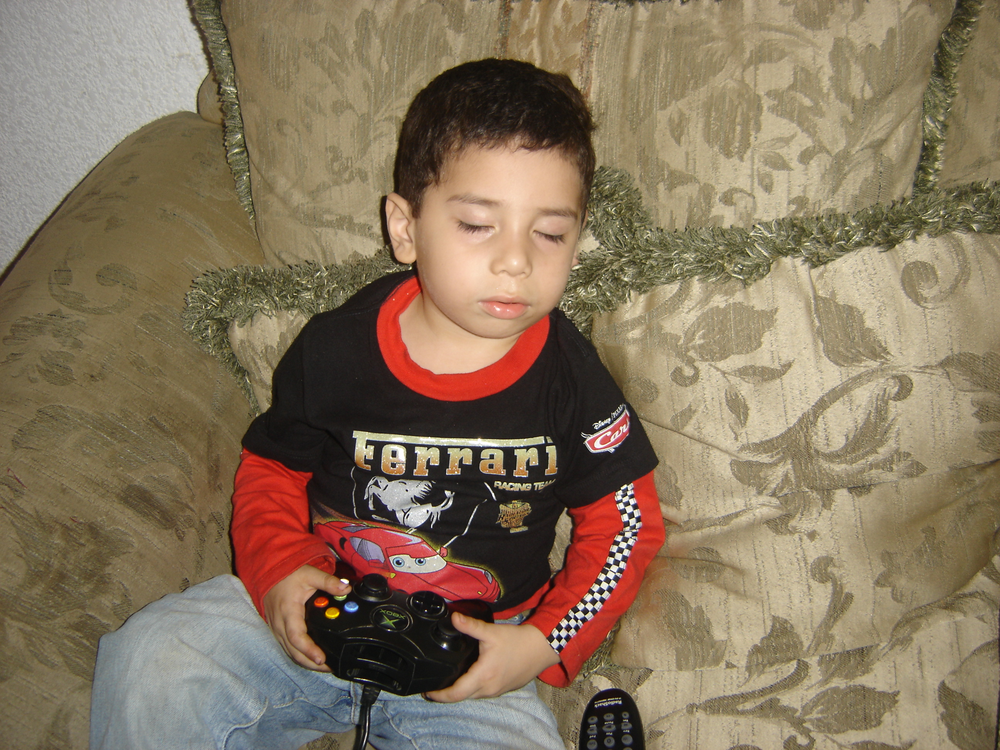

Hobbies
- Jugar juegos con mis amigos
- Hacer ejercicio e ir a caminar al parque
- Escuchar musica
- Dibujar coverart de video juegos
- Cocinar

Estudiante de la ESEN
Naci el 4 de Abril de 2004 en San Salvador, El Salvador. Mis padres se llaman Guillermo y Flor de Maria. Tengo una pasion por aprender y programar, lo aprendi de mi padre que ha programado desde los 80s. Me encanta jugar videojuegos con mis amigos los fines de semana e incluso me gusta salir a la naturaleza y ver todo lo que el mundo tiene para mi.

Pueden escribirme a mi correo: gmolinamendez04@gmail.com o encontrarme en LinkedIn.